Derechos de autor y propiedad intelectual¶
Contenidos¶
Copyright © 2013-2026 por Carlos Félix Pardo Martín.
Los contenidos publicados, tales como textos, imágenes, planos, gráficos, fotografías, etc. se distribuyen bajo una licencia Creative Commons Reconocimiento-CompartirIgual 4.0 Internacional (CC BY-SA 4.0), a menos que se indique lo contrario.
Puede leer un resumen de la licencia CC BY-SA 4.0 o el texto completo de la licencia CC BY-SA 4.0.
Para reconocer la autoría del contenido debe añadir un enlace a la página donde se encuentra el contenido, citar el nombre del autor y citar la licencia utilizada por el contenido original CC BY-SA 4.0 Internacional.
Programas de ordenador¶
Los programas de ordenador se distribuyen bajo una licencia GPL v3, a menos que se indique lo contrario.
Puede leer una copia de la licencia GPL v3.0 en la página web de la Free Software Foundation.
Librerías de software¶
Las librerías para Arduino se distribuyen bajo licencia GNU Lesser General Public License Version 3, a menos que se indique lo contrario.
Sitio web¶
El sitio web está creado con Sphinx usando un tema proporcionado por Read the Docs
El logotipo y el nombre de Picuino que aparecen en el sitio web son una marca registrada.
{kind=link}
Imágenes externas¶
Las imágenes que se muestran a continuación están tomadas de fuentes externas a esta página. Cada imagen muestra junto a ella los créditos.
Materiales¶
{kind=link}
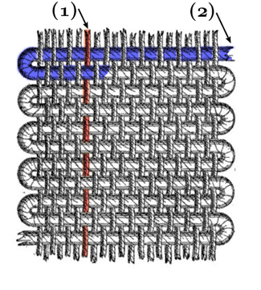
Imagen de Kette_und_Schuß.png bajo licencia Creative Commons Attribution-Share Alike 3.0
{kind=link}
Imagen de Miguel Á. Padriñán bajo licencia libre de Pexels
{kind=link}
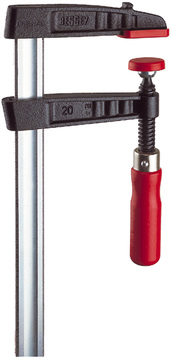
Imagen Temperguss-Schraubzwinge de BESSEY Tool GmbH & Co. KG bajo licencia Creative Commons Attribution-Share Alike 3.0 Germany
{kind=link}
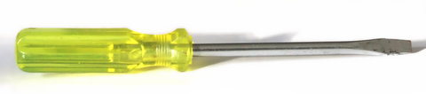
Imagen Yellow-flathead-screwdriver de Iainf bajo licencia Creative Commons Attribution-Share Alike 3.0 Unported
{kind=link}
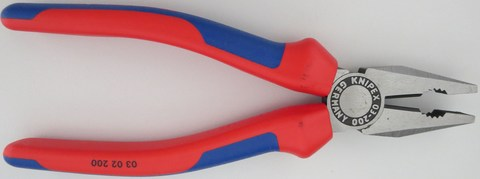
Imagen Kombinationszange de Stefan Pohl bajo licencia de dominio público.
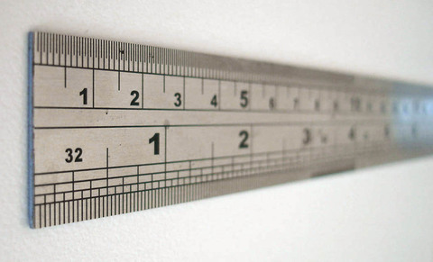
Imagen Steel ruler closeup de Ejay bajo licencia Creative Commons Attribution-Share Alike 4.0 International
Mecánica¶
{kind=link}
Imagen Logotipo FreeCAD de Yorik van Havre bajo Licencia Pública General Reducida de GNU

Imagen line art swing de frankes bajo licencia Creative Commons Zero 1.0 Public Domain License

Imagen Jib crane bajo licencia Creative Commons Attribution-Share Alike 4.0 International
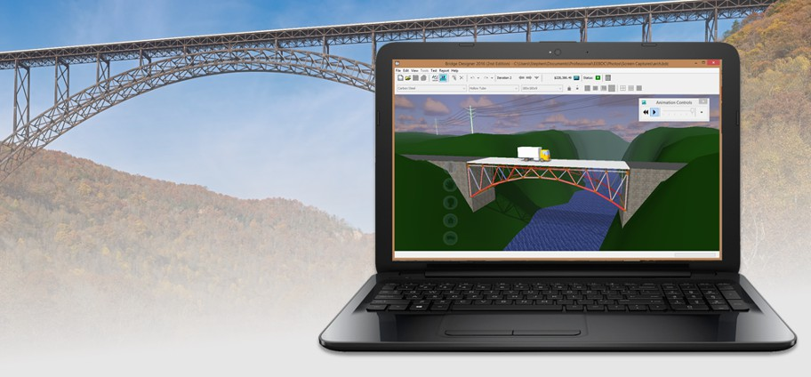
Imagen banner graphic 1 de Stephen J. Ressler con todos los derechos reservados. Usada con autorización del autor original.
Programación¶
{kind=link}
Imagen Python logo de Python Software Foundation bajo licencia PSF Trademark Usage Policy
{kind=link}
Imagen Processing logo de Processing Foundation protegida como Marca Registrada.
Imagen Arduino logo de Autor desconocido protegida como Marca Registrada.
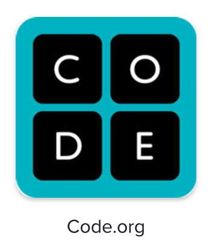
Imagen Scratch logo de MIT bajo licencia Creative Commons Attribution-Share Alike 3.0 Unported y protegida como Marca Registrada.
{kind=link}
Imagen App Inventor logo de Massachusetts Institute of Technology bajo licencia Creative Commons Attribution-Share Alike 3.0 Unported
{kind=link}
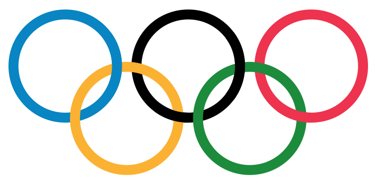
Imagen Bandera Olímpica de Pierre de Coubertin bajo licencia de dominio público.
Informática¶
{kind=link}
Imagen Computer de AJ bajo licencia Creative Commons Zero 1.0 Public Domain License
{kind=link}
Imagen Beach calm clouds idyllic de Asad Photo Maldivas bajo licencia libre de Pexels
{kind=link}
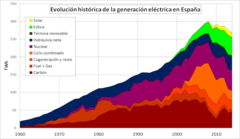
Imagen Spa elec gen de Zmzmzm2 bajo licencia Creative Commons Attribution-Share Alike 4.0 International
{kind=link}
Imagen Portrait de Metropolicons desde Flaticon bajo licencia Freepik
{kind=link}
Imagen Logotipo oficial HTML5 de W3C bajo licencia Creative Commons Attribution 3.0 Unported
{kind=link}
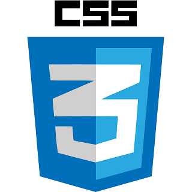
Imagen Logotipo oficial CSS3 de W3C bajo licencia Creative Commons Attribution 4.0 International
{kind=link}
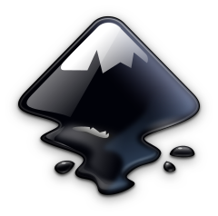
Imagen Logotipo oficial actual de Inkscape de Andrew Michael Fitzsimon bajo licencia Creative Commons Attribution-Share Alike 3.0 Unported
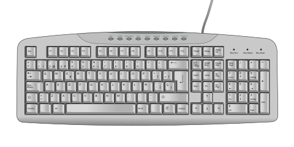
Imagen Computer keyboard ES layout de Oona Räisänen (Mysid) bajo licencia Creative Commons CC0 1.0 Universal Public Domain Dedication
{kind=link}
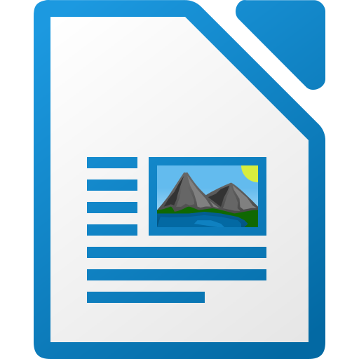
Imagen LibreOffice 6.1 Writer Icon de The Document Foundation bajo licencia Creative Commons Attribution-Share Alike 4.0 International
{kind=link}
Imagen ODT File Format free icon de Freepik desde Flaticon bajo licencia Freepik
Comunicaciones¶
{kind=link}
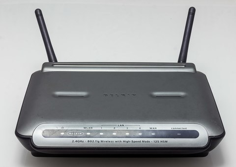
Imagen Belkin Wireless G Router F5D7231-4 Version 1000de-1121 de Raimond Spekking bajo licencia Creative Commons Attribution-Share Alike 4.0
{kind=link}
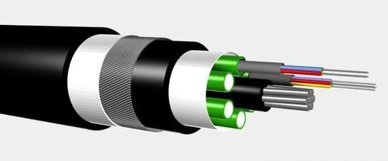
Imagen Optical fiber cable de Srleffler bajo licencia Creative Commons Attribution-Share Alike 3.0
{kind=link}
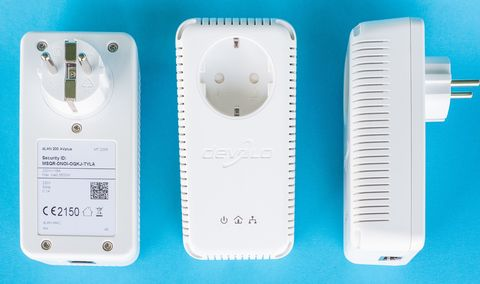
Imagen Devolo dLAN 200 AVplus - 5016 de Sven Teschke / Lizenz bajo licencia Creative Commons Attribution-Share Alike 3.0 de
{kind=link}
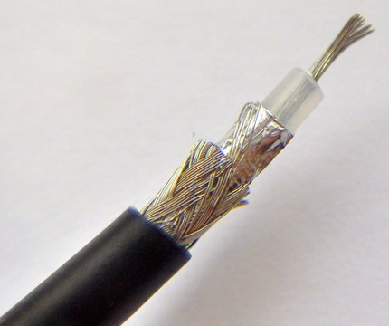
Imagen Coaxial cable cut de FDominec bajo licencia Creative Commons Attribution-Share Alike 3.0
Taller¶
{kind=link}
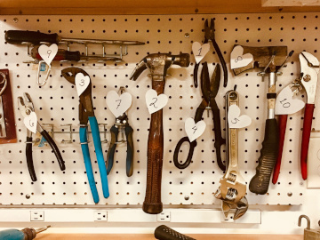
Imagen herramientas de mano colgadas en el banco de trabajo de Kim Stiver bajo licencia libre de Pexels
{kind=link}
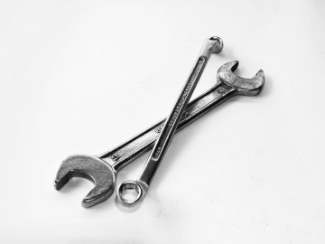
Imagen llave de cierre de acero inoxidable con llave de Pixabay bajo licencia libre de Pexels
Otras imágenes¶
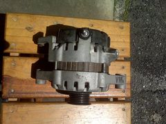
Alternador eléctrico de un automóvil.¶
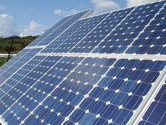
Panel fotovoltaico de generación eléctrica solar.¶
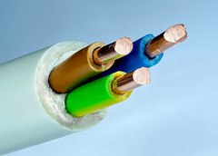
Cable de cobre con 3 hilos de 2.5mm2 de sección cada uno.¶
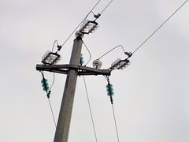
Cable de alta tensión, de aluminio y acero.¶
Disco SSD con conectores bañados en oro.¶
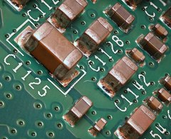
Componentes SMD unidos a la PCB con soldaduras de estaño-plomo.¶
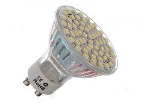
Lámpara led. Produce luz a partir de la electricidad.¶
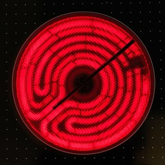
Resistencia eléctrica de una vitrocerámica, produciendo calor.¶
Interruptor diferencial. Protege a las personas de descargas eléctricas.¶
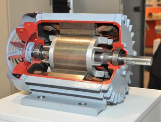
Sebastian Stabinger, CC BY-SA 3.0, vía Wikimedia Commons.¶
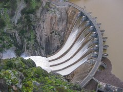
Presa de arco de Aldeadávila desembalsando debido a una crecida del río.¶
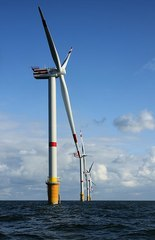
Aerogeneradores en Thornton Bank a 28km de la costa (off shore), en la parte belga del mar del norte.¶
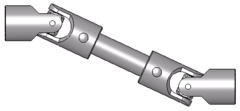
Junta de cardan giratoria, utilizada para transmitir energía.¶
Fuego de cocina a gas.¶
Surtidor de gasolina cargando el depósito de un automóvil.¶
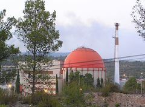
Central nuclear de José Cabrera en Guadalajara.¶
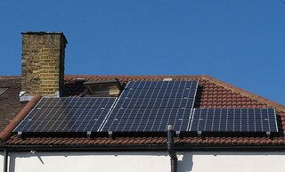
Paneles solares en el tejado de una casa.¶
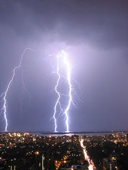
Rayo cayendo en Toronto.¶
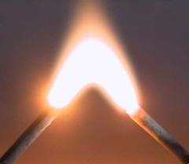
Arco eléctrico de 3000 voltios.¶
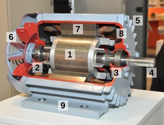
Partes de un motor de inducción de corriente alterna, abierto para poder observar su interior.¶
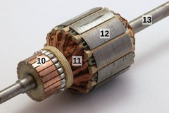
Rotor de un motor de corriente continua.¶
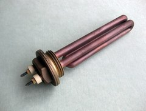
Resistencia de calentamiento de una máquina de café.¶
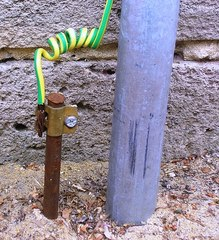
Toma de tierra con su cable amarillo-verde conectado.¶
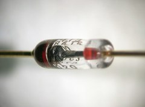
Fotografía de un diodo semiconductor.¶
Camión de bomberos con grúa y apoyos extensibles.¶
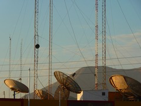
Antenas de radio con vientos para anclarlas al suelo.¶
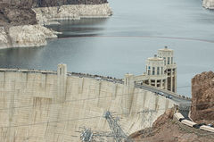
Presa de agua de Hoover.¶
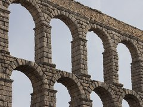
Arcos del acueducto de Segovia.¶
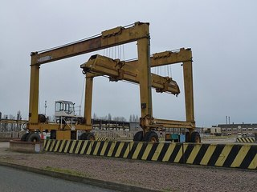
Grúa en forma de pórtico.¶
Puente colgante de San Francisco.¶
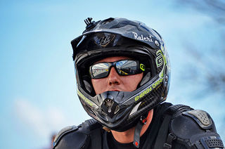
Casco para motorista.¶
Módulo de memoria RAM DDR4¶
Memoria ROM Phoenix BIOS de una placa base de ordenador personal.¶
Unidad de disco duro (HDD) con conexión SATA, vista desde abajo.¶
Unidad de almacenamiento de estado sólido (SSD) con conexión PCI Express.¶
Tarjetas de memoria microSD de varias capacidades.¶
Disco óptico CD-ROM.¶
Micrografía de la superficie de un CD-ROM en la que se pueden ver los surcos con las marcas.¶
Cinta magnética LTO-2.¶
Discos flexibles (floppy disks) de diferentes tamaños.¶
Synology DiskStation NAS (Network Attached Storage) de 6 bahías.¶
Vista delantera y trasera de un SAI marca APC.¶
Interior de un ordenador personal con refrigeración líquida.¶
Pila botón CR-2032, la más común en las placas base.¶
Modificación del chasis con aluminio, acrílico y ledes RGB.¶
Apple Watch Serie 6 Navy Blue.¶
Amazon Fire TV 4K.¶
Apple iPhone 13.¶
Imagen de OpenClipart-Vectors en Pixabay¶
Hindermath, CC BY-SA 3.0, vía Wikimedia Commons.¶
Supercomputador MareNostrum 4 en el centro de supercomputación de Barcelona.¶
Conectores SATA de datos y de alimentación de dos discos duros.¶
Cable de SATA de datos.¶
Conectores PCI Express x4, x16, x1, x16.¶
El conector inferior es PCI x32 (no Express, ya obsoleto).
Jona, CC BY-SA 3.0, vía Wikimedia Commons.
Módulo de memoria SO-DIMM DDR3 para portátil.¶
Módulo de memoria DIMM DDR y módulo DDR2 con diferente número de pines y distintas ranuras de seguridad.¶
Zócalo para CPU de tipo LGA 1151, también conocido como Socket H4.¶
Conectores USB. Micro tipo B, UC-E6, mini tipo B, hembra tipo A, macho tipo A, macho tipo B.¶
Conector USB C reversible.¶
Conectores de audio analógico de 3.5 mm de un ordenador personal.¶
Puertos PS/2 para teclado (morado) y para ratón (verde).¶
Conector RS-232 (DB-9 hembra).¶
Conector VGA macho.¶
Conector DVI macho.¶
Conector Ethernet RJ-45 hembra.¶
Cable UTP de Ethernet con conector RJ-45 macho.¶
Cable UTP de Ethernet, con cuatro pares de cable de cobre trenzados y sin apantallar.¶
Logotipo del estándar Bluetooth.¶
CPU 80486DX típica de los PC de mediados de los años 90.¶
Gustavb, CC BY-SA 3.0 Unported, vía Wikimedia Commons.¶
Evan-Amos, CC BY-SA 3.0, vía Wikimedia Commons.¶
Max Roser, Hannah Ritchie, CC BY-SA 4.0, vía Wikimedia Commons.¶
Ratón con cable.¶
Teclado español.¶
Escaner.¶
Cámara web externa.¶
Micrófono magneto-dinámico de marca Sennheiser.¶
Tableta gráfica.¶
Proyector de vídeo.¶
Impresora láser.¶
DAC de audio.¶
Pilotos LED de un teclado.¶
Motor que produce vibración.¶
Dispositivo de braille.¶
Pantalla táctil de un smartphone.¶
Impresora multifuncion.¶
Casco de realidad virtual.¶
Tarjeta de sonido externa.¶
Placa base ASRock A70GXH-128M de 2012.¶
Diferencia entre una imagen de mapa de bits (Raster) y una imagen vectorial (SVG).¶
Zaqwerdx, CC BY-SA 3.0, vía Wikimedia Commons.¶
Stephen Winsor, GNU General Public License v3, vía Wikimedia Commons.¶
Tronco de tejo en el que se distingue bien el duramen de la albura.¶
Lysippos, CC BY-SA 2.0 DE, vía Wikimedia Commons.¶
Rojinegro81, CC BY-SA 3.0, vía Wikimedia Commons.¶
Dontworry, CC BY-SA 3.0, vía Wikimedia Commons.¶
Gran Pirámide de Guiza. Recubierta por completo de piedra caliza.¶
Sarranpa, CC BY-SA 4.0, vía Wikimedia Commons.¶
Dafran, CC BY-SA 4.0, vía Wikimedia Commons.¶
Siim Sepp, CC BY-SA 3.0, vía Wikimedia Commons.¶
Lourdes Cardenal, CC BY-SA 3.0, vía Wikimedia Commons.¶
Gres usado en la industria química.¶
Matthew Bowden. CC BY-SA 3.0, vía Wikimedia Commons.¶
Fotografía de un polímero real usando un microscopio de fuerza atómica.¶
Botella de agua mineral, fabricada con PET.¶
Tubería y codo de PVC.¶
Caja de CD hecha de polipropileno.¶
Poliestireno expandido o poliexpan, también llamado "corcho blanco".¶
Abrazaderas de nailon.¶
Cinta de teflón para prevenir fugas.¶
Gafas protectoras de policarbonato.¶
Bromo puro rodeado de un cubo de metacrilato.¶
Teléfono fabricado con baquelita.¶
Tablero de madera recubierto de melamina.¶
Contenedor de fibra de vidrio con resina epoxi.¶
Esponja de poliuretano.¶
Guante de látex.¶
Traje de neopreno para buzos.¶
Pasta de silicona para sellar.¶
Válvula antirretorno cerrada.¶
Válvula antirretorno abierta.¶
Visión interna de una válvula estranguladora o reguladora de caudal.¶
Tornillo y tuerca hexagonal.¶
Gato mecánico para levantar automóviles, con un tornillo que mueve el mecanismo.¶
Algoritmo de ordenación por mezcla.¶
Logotipo de derechos de autor reservados (copyright).¶
Logotipo de copyleft (algunos derechos de autor reservados).¶
Logotipo de la licencia Creative Commons Reconocimiento-Compartir igual.¶
Logotipo de la licencia de software GPL versión 3.¶
Logotipo de dominio público (sin derechos de autor).¶
Placa controladora BBC micro:bit v2.¶